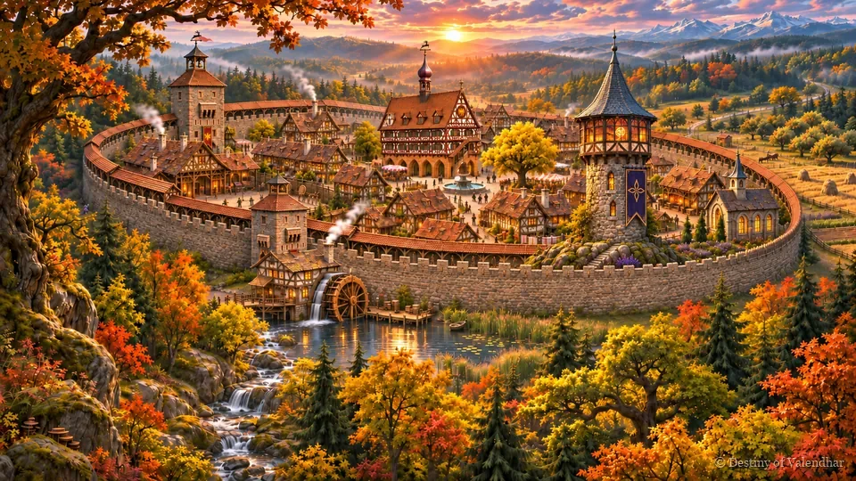
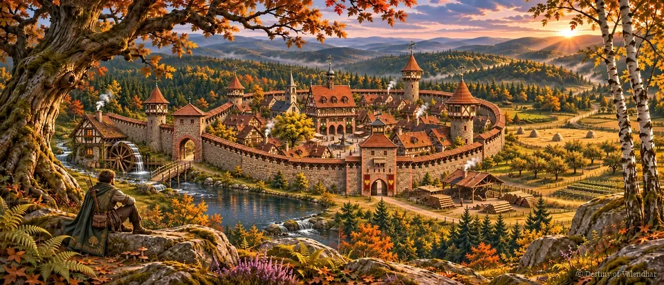

Der Wald
Ringe, die dunkler werden
Etwa ein Quadratkilometer mitteleuropäischer Mischwald nördlich und westlich der Stadt, in Ringen angelegt. Nahe der Mauer ist es sonnig und sicher; weiter drinnen werden die Bäume älter und höher und die Wölfe kühner.

Die Karte
Zehn Zonen
Jede Zone hat ihre eigenen Bäume, ihr eigenes Licht und ihre eigene Rolle auf der Reise, sodass du immer ein Gefühl dafür hast, wie tief du drin bist.
Zone für Zone
| Zone | Name | Von der Stadt aus | Was dort ist |
|---|---|---|---|
| F1 | Waldrand & Wiese | 0–100 m | Birken, Haseln, Brombeeren und hohes Gras. Kräuter zum Sammeln, Rehe und Hasen. |
| F2 | Holzfällersaum | 100–250 m | Baumstümpfe, Holzstapel und ein Holzfällerunterstand. Die ersten Wölfe. |
| F3 | Buchen-Eichen-Wald | 250–500 m | Silberne Buchenstämme wie Säulen, alte Eichen, Lichtstrahlen. Wolfsrudel und Wildschweine. |
| F4 | Bachschlucht | Quer durch F3 | Ein felsiger Bach, ein kleiner Wasserfall und eine Brücke aus einem umgestürzten Baum. |
| F5 | Die alte Lichtung | ~400 m nördlich | Ein Ring stehender Steine, eine uralte Eiche, leuchtende Funken in der Nacht. |
| F6 | Fichten-Tannen-Tiefwald | 500–900 m | Dunkle Fichten, Nadelboden, Totholz und wenig Licht. Dunkle Wölfe. |
| F7 | Der Wolfsbau | ~700 m | Ein Felsvorsprung mit Höhleneingang, Knochen und abgenagten Geweihen. Der Alpha. |
| F8 | Verfallener Wachturm | ~600 m nordwestlich | Ein eingestürzter, überwucherter Steinturm. Eine Aussicht und eine verlorene Tasche. |
| F9 | Hochsitz & Lager | ~350 m | Ein Hochsitz, ein verlassenes Lagerfeuer, ein Unterstand. |
Bilder aus dem Wald




